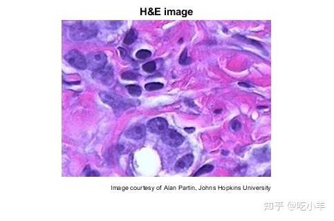
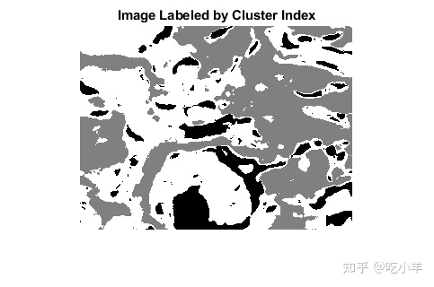
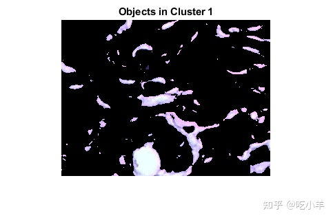
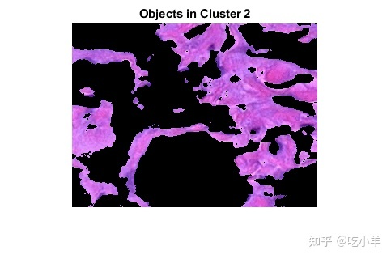
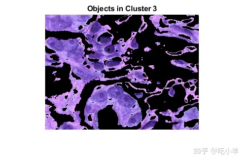
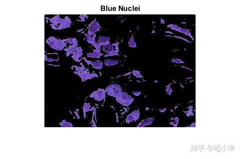

Home
本示例显示如何使用 Lab颜色空间和 K 均值聚类以自动化方式分割颜色。
第 1 步：读取图像
读入hestain.png，这是一张用苏木精和伊红 (H&E) 染色的组织图像。这种染色方法有助于病理学家区分不同的组织类型。
he = imread('hestain.png');
imshow(he), title('H&E image');
text(size(he,2),size(he,1)+15,...
'Image courtesy of Alan Partin, Johns Hopkins University', ...
'FontSize',7,'HorizontalAlignment','right');

步骤 2：将图像从 RGB 色彩空间转换为 Lab色彩空间
如果忽略亮度变化，您会在图像中看到多少种颜色？共有三种颜色：白色、蓝色和粉色。请注意，您可以在视觉上轻松区分这些颜色。Lab色彩空间（也称为 CIELAB 或 CIE Lab）使您能够量化这些视觉差异。
Lab 颜色空间源自 CIE XYZ 三色值。Lab空间由亮度L、色度a组成（表示颜色沿红绿轴下降的位置）、色度层b（表示颜色沿蓝黄轴下降的位置）。所有颜色信息都在a和b层中。您可以使用欧几里得距离度量来测量两种颜色之间的差异。
使用rgb2lab将图像转换为Lab色彩空间。
lab_he = rgb2lab(he);
第 3 步：使用 K 均值聚类对ab空间中的颜色进行分类
聚类是一种为对象分组的方法。K-means 聚类将每个对象放在空间中具体位置上。它找到分区，使得每个集群中的对象尽可能彼此靠近，并尽可能远离其他集群中的对象。K-means 聚类要求您指定要分区的聚类数和距离度量以量化两个对象彼此之间的接近程度。
由于颜色信息存在于ab颜色空间中，因此您的对象是具有a和b值的像素。将数据转换为数据类型single以便于使用imsegkmeans。用imsegkmeans将对象聚类为三个聚类。
ab = lab_he(:,:,2:3); ab = im2single(ab); nColors = 3; % repeat the clustering 3 times to avoid local minima pixel_labels = imsegkmeans(ab,nColors,'NumAttempts',3);
对于输入的每个对象，imsegkmeans返回对应于分类的索引或标签。用像素标签标记图像中的每个像素。
imshow(pixel_labels,[])
title('Image Labeled by Cluster Index');

步骤 4：创建按颜色分割 H&E 图像的图像
使用pixel_labels，您可以将hestain.png中的对象按颜色分类，这将生成三个图像。
mask1 = pixel_labels==1;
cluster1 = he .* uint8(mask1);
imshow(cluster1)
title('Objects in Cluster 1');

mask2 = pixel_labels==2;
cluster2 = he .* uint8(mask2);
imshow(cluster2)
title('Objects in Cluster 2');

mask3 = pixel_labels==3;
cluster3 = he .* uint8(mask3);
imshow(cluster3)
title('Objects in Cluster 3');

第 5 步：分割细胞核
类别3包含蓝色对象。请注意，有深蓝色和浅蓝色物体。您可以使用 Lab颜色空间中的L图层将深蓝色与浅蓝色分开。细胞核呈深蓝色。
回想一下，L层包含每种颜色的亮度值。提取该类中像素的亮度值，并使用imbinarize设置全局阈值，对它们进行阈值处理。蒙版is_light_blue给出了浅蓝色像素的索引。
L = lab_he(:,:,1); L_blue = L .* double(mask3); L_blue = rescale(L_blue); idx_light_blue = imbinarize(nonzeros(L_blue));
复制蓝色对象的蒙版mask3，然后从蒙版中移除浅蓝色像素。将新蒙版应用到原始图像并显示结果。只有深蓝色细胞核可见。
blue_idx = find(mask3);
mask_dark_blue = mask3;
mask_dark_blue(blue_idx(idx_light_blue)) = 0;
blue_nuclei = he .* uint8(mask_dark_blue);
imshow(blue_nuclei)
title('Blue Nuclei');

======================================================================
我的测试结果及程序
下面是我测试的代码：

注：本文根据MATLAB官网内容修改而成。